Постановка задачі лабораторної роботи №4
Придбати практичні навички роботи маніпулювання інформаційним вмістом Web-документа засобами мови JavasSript, використання об’єктів,масивів, функцій, подій, обробників подій у сценаріях на мові JavasSriptСередовище розробки: Notepad++
Сxea URL
Файл main page(2).html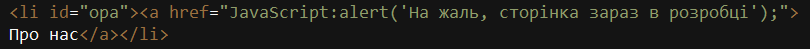 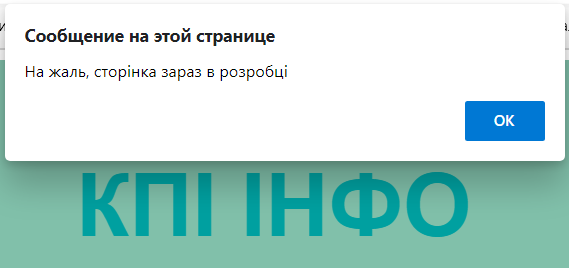
Обробник подій
Файл main page(2).html
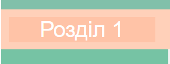 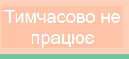
Підстановка
Файл main page(2).html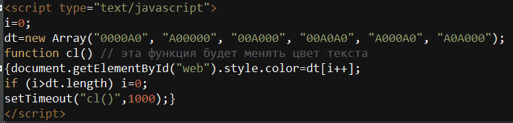 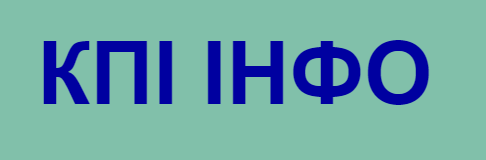
Вставка
Файл main page(2).html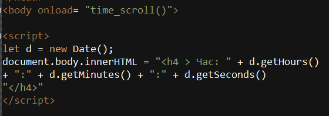 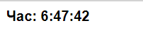
Масиви
Файл java(arrays).html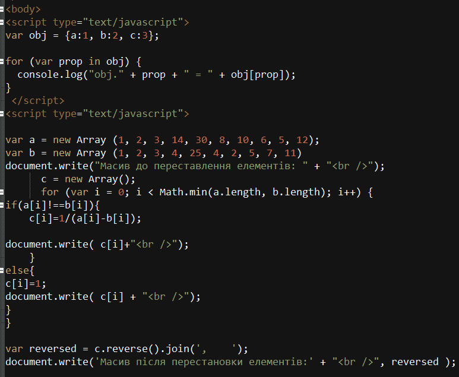 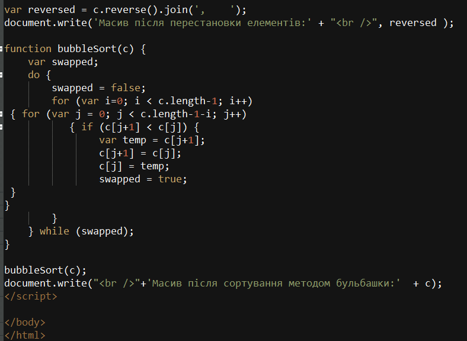 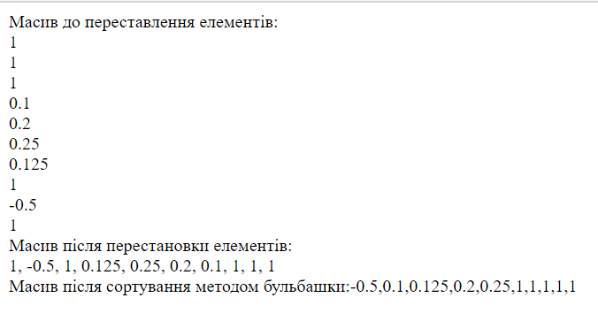
Виконання 6-го завдання
Завдання зробити текстовий редактор, в якому можна змінювати жирність, нахил, підкреслення, колір, регістр слів на мові JavasSript
Файли editor.html та edit.js
 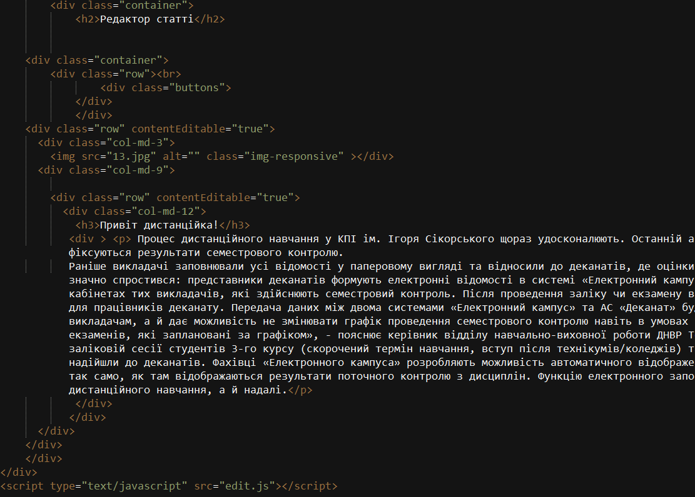
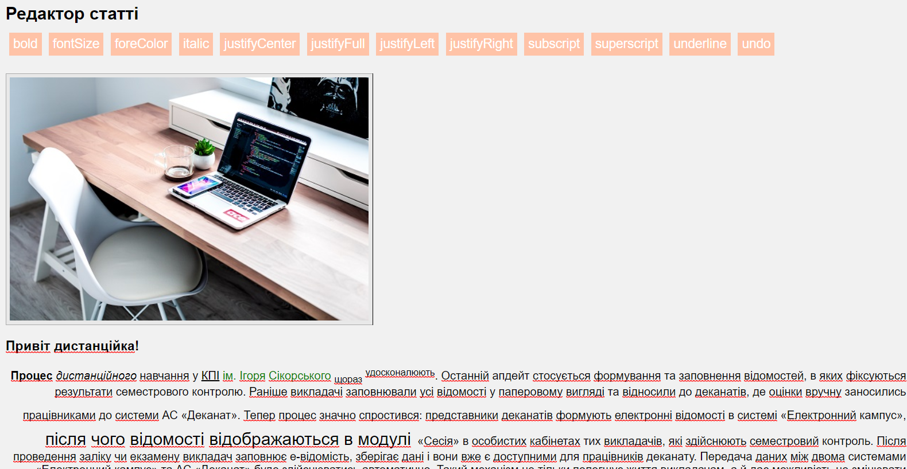
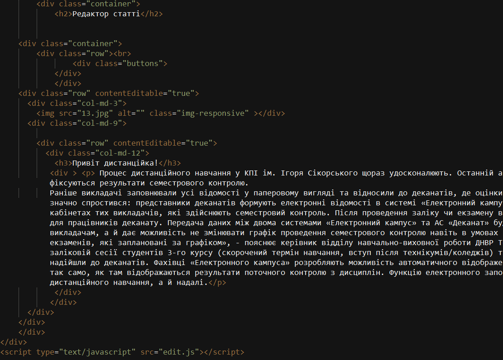
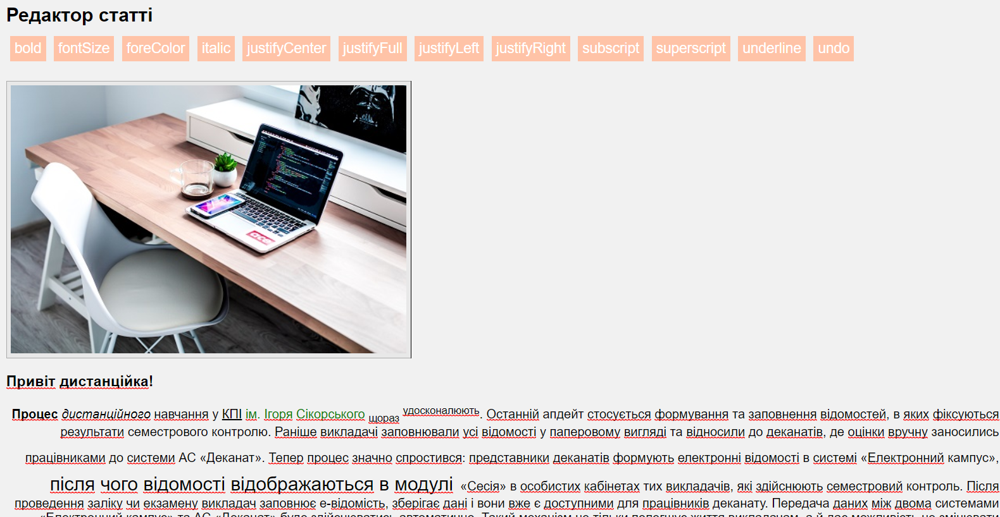